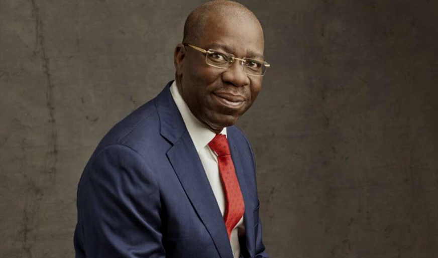

Executive Governor, Edo State
The world is again confronted with the menace of modern slavery centuries after the abolition of Trans-Atlantic slave-trade. Today, people are still being trafficked and kept in slavery. Many also risk their lives crossing the Mediterranean sea and the Sahara desert in search of a better life in Europe. It is global knowledge that Nigeria is a major source country for human trafficking and irregular migration but it is more alarming that 60% of the challenge originates from Edo State. This is a fact that is both worrisome for Nigeria as a country and Edo State, at a sub-national level. the inhumane impact it has had on our people and communities. On a sub-national level.
As a State, we recognise the profound negative effect of the challenge on our body polity but most importantly, we are concerned on the inhumane impact it has had on our people and communities. On a sub-national level, we have the political will like no other to make these menace history in Edo State.
Consequently, we are taking a different approach to tackling these issues by mainstreaming actions to address human trafficking and irregular migration in the State’s overall development strategy.
The aim of this integrated approach is to address the push & pull factors and to ensure sustainability of our efforts. It is for this purpose, that we have introduced this programme called the Edo State Managing Migration through Development Programme (MMDP).
Through this programme, we will resettle and re-integrate migrant returnees; enhance the economic empowerment and reduce the economic pressures that drive migration; provide the needed frameworks to eradicate human trafficking and provide social amenities and protection to at-risk communities in the State. We believe, that once we are able to actualise the objectives of this programme, we can begin to reduce, and in time, eradicate irregular migration and human trafficking from Edo State.
We cannot achieve these lofty vision all on our own. We need partnership and assistance at all levels, international, national and local. The inevitable truth is that working with the international community is sine qua non for the overall success of our development strategy.
We implore you to join us to explore areas where you can support, assist and collaborate with Edo State. Through the MMDP, we set out what we intend to do and how we intend to achieve them. We are therefore calling on all international partners to work with us so that we will be able to achieve our mission to eradicate human trafficking and irregular migration. Achieving this will not only impact positively on Edo State but will augment the good work of the Federal Government and relevant destination countries.